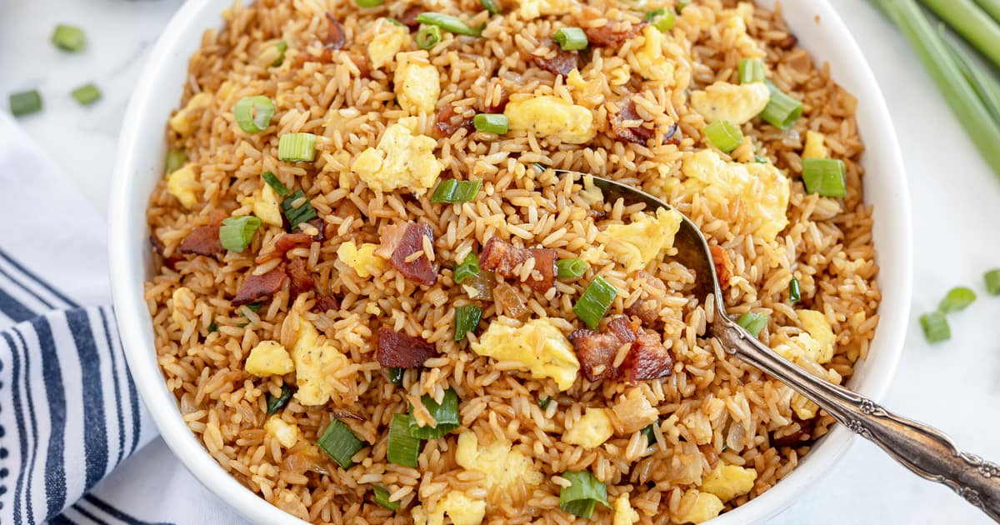

Home
Fried Rice

Description
This is a homemade recipe that has a great amount of protein. The meal includes eggs, turkey bacon,
chicken, brown rice, and soy sauce. Light soy sauce may be added to the meal if sodium is being limited.
Fried rice is a great meal to eat after the gym and can be paired with vegetables! Meat proportion can vary and
other types of meat can be substituted or added.
Ingredients
- 1 Chicken Breast
- 1/2 Cup Soy Sauce
- 1 Lemon
- 2 Cups Uncooked Brown Rice
- 1/4 of Packaged Turkey Bacon
- 1 Tbsp Garlic Powder
- 1 Tbsp Sesame Oil
- 5 Eggs
- 4 Cups and 1 Tbsp of Water
Steps
- Cook all of the rice with 4 cups of water
- Cut Turkey Bacon into short pieces
- Cook Turkey Bacon in a pan and put aside once cooked
- Drizzle 1 Tbsp of water on egg while mixing
- Fully cook scrambled eggs and set them aside
- Mix soy sauce, lemon, garlic powder, and sesame oil in a bowl
- Cut chicken breast into cubes and cook
- Once chicken breast is fully cooked, add rice, eggs, and turkey bacon onto the pan and mix together
- [optional] Add vegetables of your liking
- Add sauce onto pan with mixed ingredients and mix together
- Serve a plate